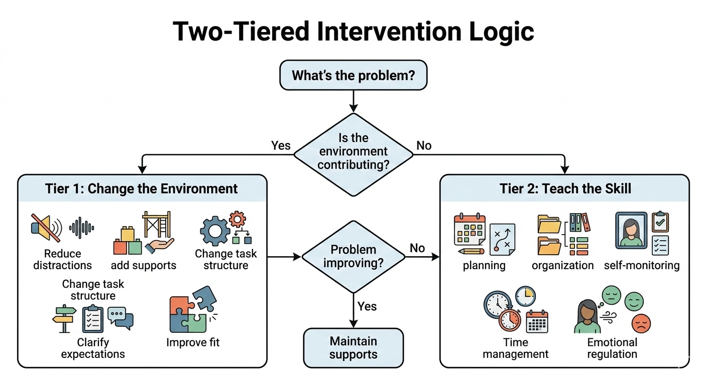
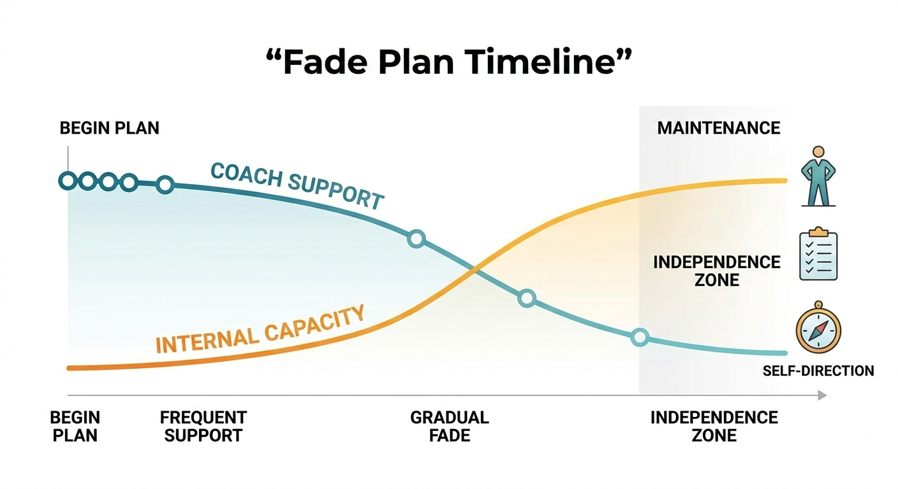
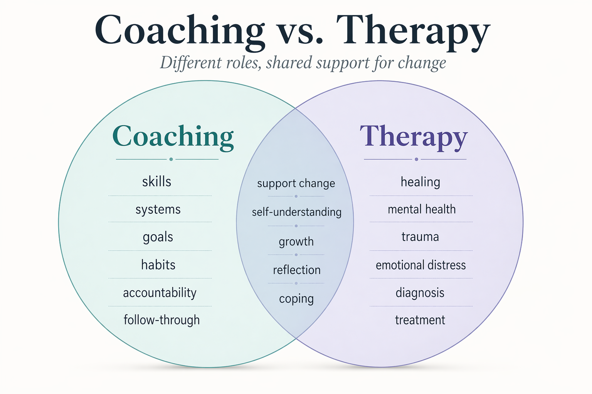

The Coaching Architecture
Operationalizing the Dawson & Guare intervention framework. Distinguishing coaching from tutoring and therapy, and mastering the art of environmental modification and skill acquisition.
Module Overview
This module operationalizes the intervention process. It distinguishes EF coaching from tutoring (which focuses on content) and therapy (which focuses on pathology), framing coaching as a process of "skill acquisition" and "environmental modification."
The Core Metaphor
The coach initially serves as the client's "external frontal lobe" or surrogate executive system. This involves lending executive skills while simultaneously fostering independence. Critical to this model is the plan for obsolescence — from session one, the coach must plan how to transfer these functions back to the client.
The Two-Tiered Intervention Logic
Before asking the client to change, the coach must examine the external context.

Tier 1: Change the Environment
Before asking the client to change, examine the external context. Can the task be shortened? Can the workspace be altered? Can external cues (alarms, visual schedules) be introduced?
This aligns with Barkley's "Extended Phenotype" theory — offloading executive demand onto the physical environment.
- Shorten or restructure the task
- Modify the physical workspace
- Introduce external cues and reminders
- Reduce environmental distractions
- Add visual schedules and checklists at the "point of performance"
Tier 2/3: Teach the Skill
If environmental modification is insufficient, the coach teaches internal strategies. This involves explicit instruction, modeling, and rehearsal.
The curriculum emphasizes that telling a client what to do is ineffective; they must practice the "how" during the session.
- Explicit instruction of the strategy
- Coach modeling of the behavior
- Guided rehearsal during the session
- Practice in the natural environment
- Review, adjust, and generalize
The Coach as "External Frontal Lobe"

Lending Organization
The coach provides the structure (agendas, shared documents, templates) that the client's own executive system cannot yet generate independently.
Lending Inhibition
The coach models pausing and reflecting: "Let's stop for a moment. If we say 'yes' to this new project, what happens to the deadline for the current one?"
The Fade Plan
Critical: from session one, the coach must plan how to transfer these functions back to the client. This distinguishes coaching from enabling.
ICF Core Competencies in the EF Context
The International Coaching Federation provides a rigorous ethical and competency framework. Four specific domains are paramount for EF coaches.

The Therapy Boundary: EF coaches must distinguish between "coaching for action" and "therapy for healing." If a client's procrastination is rooted in deep-seated trauma or clinical depression, the ethical mandate is to refer to a mental health professional.
Confidentiality: With student clients paid for by parents, the coach must establish clear boundaries — the "Triangle of Trust" requires reporting process to parents ("We are working on a calendar system") but keeping content confidential ("He is worried about his girlfriend").
Trust and Safety: Clients with EF deficits often carry significant shame ("I am lazy," "I am broken"). The coach must create a "shame-free zone" where missed tasks are viewed as data points for problem-solving, not moral failings.
Agreements: The "Coaching Agreement" is not just a contract — it is the session-by-session agreement on what will be worked on. "What do you want to walk away with at the end of this 45 minutes?"
Active Listening: Listening for what is not said. For an EF client, silence often indicates overwhelm or working memory overload. The coach must check in: "I noticed a long pause. What is happening in your mind right now?"
Powerful Questioning: Moving from "Why?" (which invites excuses) to "What?" and "How?" (which invite solutions). Instead of "Why didn't you do the homework?", ask "What got in the way of starting?"
Facilitating Growth: Helping the client transform a specific win (organizing a backpack) into a generalized skill (organizing a digital desktop). This is the process of generalization — moving from acquisition to fluency to generalization.
How the Coaching Architecture Shows Up in Real Systems
The Dawson and Guare framework is most powerful when it is applied across the actual environments where clients fail or succeed: school portals, family routines, work systems, and peer-accountability structures.
Academic Systems
Translate goals into calendar blocks, assignment dashboards, and missing-work review rituals. The architecture becomes visible when the student can find, start, and finish real school tasks.
Family Systems
Use the coach-client-parent triangle carefully. Report process, expectations, and routines while preserving the client's dignity and appropriate confidentiality.
Peer Accountability
Group coaching, body doubling, and structured check-ins can reduce drift and increase follow-through. Good coaching architecture does not assume all accountability must be solitary.
Design Standard
If a strategy cannot survive contact with the client's real environment, it is not yet a working intervention. Every coaching plan should be tested at the point of performance, then simplified until it holds.
The Coaching Cycle & SMART Goals
The module details the recursive nature of coaching: Assess → Set Goal → Design Strategy → Implement → Review.
Assess
Identify current EF skill levels and environmental demands using ESQ-R and audits.
Set Goal
Use SMART framework adapted for EF: not "do homework" but "initiate math homework at 4:00 PM using the 10-minute timer strategy."
Design & Implement
Select environmental modifications and skill-building strategies. Practice the "how" during sessions.
Review
Evaluate what worked, what didn't, and adjust. Missed tasks are data, not failures.
Motivational Interviewing
Resistance in EF coaching often manifests as "Yeah, but..." behaviors. Rather than arguing for change ("You really need to use a planner"), the coach explores the ambivalence: "On one hand, you want to get better grades, but on the other, using a planner feels restrictive. Tell me more about that restriction."
Help the client see the gap between their current behavior and their stated values — this is called Developing Discrepancy.
Module 3 Assignment
Assignment 3.1: The Ethics & Competency Portfolio
Objective: Demonstrate readiness for professional practice.
Task: Create a portfolio containing:
- The "Therapy vs. Coaching" Script: Write a script for a conversation with a potential client who begins discussing severe anxiety and past trauma during the intake. How do you hold the boundary while remaining empathetic?
- The Session Agenda Template: Design a one-page template that includes prompts for Review of previous action items (Accountability), Setting the agenda (Agreement), Exploring barriers (Awareness), and Designing new actions (Growth).
- Reflective Essay (1,000 words): Analyze the phrase "Lending the Frontal Lobe." Discuss the risks of over-functioning for a client and specific strategies to ensure empowering rather than enabling.
Implementation Models and Coaching Systems
Practice Scenarios
Apply the coaching architecture in context. Each scenario presents a real coaching relationship moment. Choose your response and see the principle it tests.
Want Your Session Plans Evaluated?
Module 3 teaches the coaching architecture. The paid path adds evaluator feedback on your session designs, ethical boundary decisions, and readiness for real client work.
See Coaching Review Options